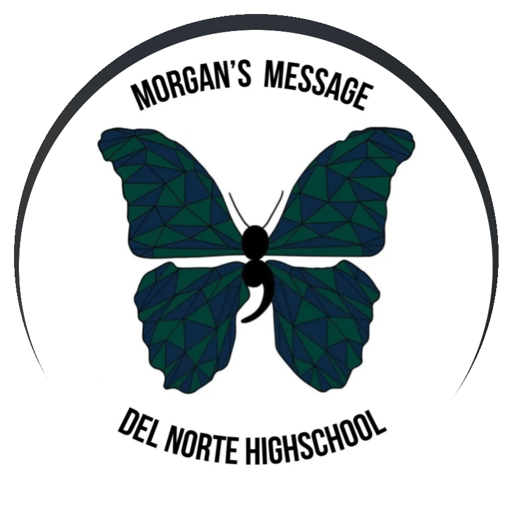

Partnerships & Collaborations
Stories work best when support is nearby.
Broad Shoulders welcomes resource sharing and thoughtful collaboration with schools, clubs, counselors, nonprofits, teams, and student-led groups.
Why Collaboration Matters
A simple bridge between lived experience, trusted help, and youth-led community.
Broad Shoulders highlights aligned organizations, student-led chapters, and mental health resources connected to the mission so young people can find support that feels close to the stories they are already carrying.
Spotlights
Resources and student chapters connected to the work.

Chapter Spotlight Morgan's Message DNHS Chapter The Del Norte High School Morgan's Message chapter is a youth-led student ambassador chapter supporting student-athlete mental health, open conversations, and stigma reduction at DNHS. Members of the Broad Shoulders Executive Leadership team are Morgan's Message student ambassadors who run the DNHS chapter. View Chapter Spotlight →